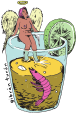

Una cerveza intensa y tropical ideal para la playa con notas brillantes a mandarina, coco, resina de lúpulo y frutas exóticas. Elaborada con trigo y avena para obtener un final seco junto con un cuerpo limpio y suave que contrasta con sus potentes 8 grados de alcohol.

Cerveza de 7 grados de alcohol con notas a mango, naranja, duraznos y un toque de malta que se equilibra con el amargor pino y frutas tropicales. Elaborada con trigo para obtener un cuerpo suave.

Una mezcla de flores de lúpulo con un toque de azúcar para alimentar la carbonatación natural, combina un tenue amargor con una fina burbuja que resalta los aromas exóticos propios del lúpulo, destacan notas a mango, guayaba, litchi y un toque de resina de lúpulo Refrescante, ligera y burbujeante 🦐🫧